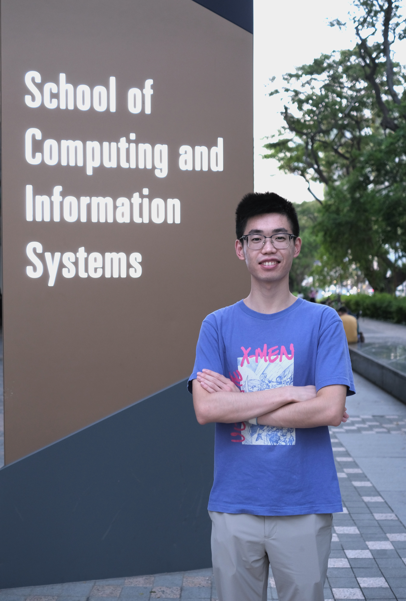

News
5 August 2019
I was admitted into Ph.D. in Computer Science programme as a full-time student commencing in January 2020, Singapore Management University .
|  |
Zhaozheng Chen
Research Assistant
School of Computer Science and Technology
72 Binhai Ave, Qingdao, Shandong, China 266237
zhaozhengcc@gmail.com
|
Zhaozheng Chen is a research assistant in Intelligent Media Research Center, Shandong University, he will be a Ph.D. student in Singapore Management University since January 2020. His research interests
include computer vision and machine learning.
Education
| Singapore Management University Ph.D. student in Computer Science Since January 2020, Singapore Advisor: Prof. Qianru Sun |
| Shandong University Bachelor in Computer Science and Technology September 2015 - June 2019, Jinan and Qingdao Advisor: Prof. Liqiang Nie |
Experiences
| Research Assistant Intelligent Media Research Center, Shandong University October 2017 - Present, Qingdao Advisior: Prof. Liqiang Nie |
| Intern Student YouTu Lab, Tencent October 2018 - January 2019, Shenzhen Advisior: Dr. Xiaoyong Shen |
Publications
In the Year of 2019:| Virtually Trying on New Clothing Item with Arbitrary Pose
Na Zheng, Xuemeng Song, Zhaozheng Chen, Linmei Hu, Da Cao and Liqiang Nie ACM MM 2019 |
| Explicit Interaction Model towards Text Classification
Cunxiao Du, Zhaozheng Chen*, Fuli Feng*, Lei Zhu, Tian Gan, Liqiang Nie AAAI 2019 • Codes |
Honors
|
Bronze Medal, The ACM-ICPC Asia Regional Contest Nanning Site, Nov. 2017 National Scholarship for Encouragement, Ministry of Education of P.R.China, Sep. 2017 Meritorious Winner, Mathematical Contest In Modeling, Feb. 2017 Outstanding Student of Shandong University, Sep. 2016 The First Prize Scholarship of Shandong University, Sep. 2016 |
Last update: September 2, 2019. Webpage template borrows from Yongqi Li.